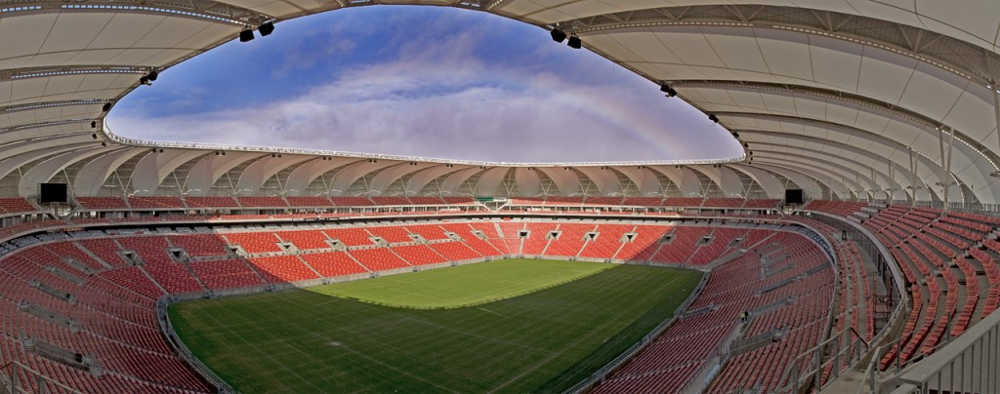

The Nelson Mandela Bay Stadium is a 46,000 seater stadium in Port Elizabeth, Eastern Cape, South Africa.
The five-tier, R2 billion Stadium was built overlooking the North End Lake, at the heart of the city. It is one of three coastal stadiums built to host the 2010 FIFA World Cup.
The first event in the stadium was in 6 June 2009. The first match was in 16 June 2009 and the official opening of the stadium was in 28 February 2010.
The tenants of the stadium are Chippa United FC (PSL) and Eastern Province Kings (Currie Cup), Southern Kings (Super Rugby).
The stadium is named after the administrative district which the stadium is within, the Nelson Mandela Bay Metropolitan Municipality, itself named after Nelson Mandela, the former President of South Africa. The Nelson Mandela Bay area is made up of the city of Port Elizabeth, the towns of Uitenhage and Despatch, as well as smaller settlements.
The stadium is sometimes incorrectly called the "Nelson Mandela Stadium" in the media. This may lead to confusion, as there is a Nelson Mandela Stadium in Kampala, Uganda. It is also sometimes mistakenly claimed that the stadium is named after Mandela, rather than the metropolitan area named in his honour.